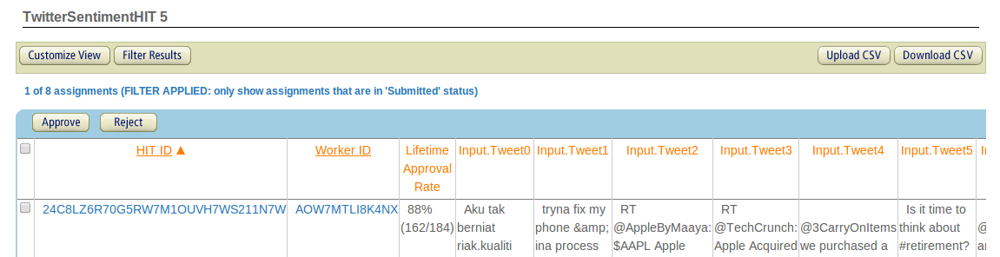
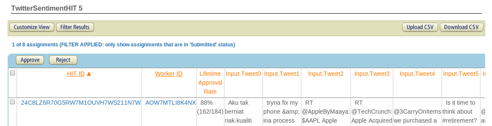
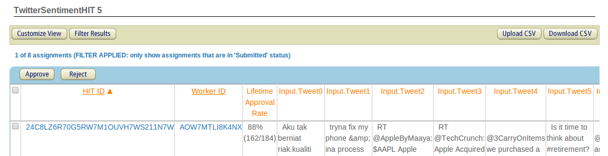

Today is a big day. The approval rate of literally 10s of Turkers rests in your hands. We will be approving and rejecting the work that you should have recieved from last week's HIT, based on the controls you have embedded. We will do this using an automated script, which will make a very basic comparison of the recieved answers to the expected answers, and approve or reject assignments accordingly. If you continue to use MTurk in the future, its good to think about the shortcomings of this approach. Looking at each assignment in isolation can be somewhat naive, and for Turkers who perform more than one or two HITs, it makes a lot of sense to look at a Turker's performance overall. For this assignment, we want to keep things simple, but if this were a larger research project, we would likely keep track of all the work each Turker has done for us, and approve or reject based on an average performance over time. This way, we are more tolerent of a few errors from workers who we know do good work in general.
Before we delve into the assignment, a word to the wise: About a year ago, I accidentally rejected work from a pile of Turkers who were supposed to be approved, and I had to field the waves of angry and woeful emails from the wrongfully rejected Turkers. I know it is easy to get caught in the "people-as-function-call" mindset, but I speak from experience when I say it is very traumatic getting hate mail and sob stories back from your function calls. (Imagine if the Java API emailed you when you messed up : "WTF? Passing me a Null Pointer? A**hole!") Luckily, MTurk let's you backpedal and reapprove people, and I only cost Chris a few hundred dollars in "we're so sorry" fees to the Turkers. But, the takeaway: Turkers are people too. Triple check your work before submitting your rejections.
TO DO
As before, we will be communicating with MTurk by uploading and downloading CSV files. For more heavy-duty MTurking, you can use the API to approve and reject HITs. If you want to try using the API for this assignment, go for it! You will be met with fame, fortune, and much extra credit. If not, download our template grading script to work with CSVs.
Download your HIT data as a CSV file. You can do this from the Manage tab of your requester account. Next to the name of your batch of HITs, click on Results and then on Download CSV.

Notice that there are two empty columns, Approve and Reject. These are the columns you will fill in using your grading script.
Open grade_hits_template.py. There are a few lines that need to be completed in order for you to run the script, and they are marked with 'TODO'. All this script needs to do is check each control tweet against the gold standard answer and determine whether the Turker answered correctly. The script should then put an 'X' in either the Approve or Reject column of the CSV. This will tell MTurk what to do for each assignment.
When you think your script is working, run it by passing it the path to your downloaded data. E.g.
Open the output file, hits_graded.csv. Double check by spot checking some of the approvals and rejections and verifying that you agree with the decisions your script made.
If everything looks normal and happy, you can upload hits_graded.csv to MTurk from the same screen where you downloaded the data. After processing, you should get a screen like this.
 
